소방시설 전문공사
Fire Alarm System
화재감지 · 경보설비를 비롯한 소방시설 전반의 시공과 개보수, 유지보수를 수행합니다.
라온에프에스는 화재감지 · 경보 시스템을 중심으로 소방시설의 설계부터 시공, 유지보수까지 전 과정을 수행하는 전문 기업입니다.
Fire Alarm System
화재감지 · 경보설비를 비롯한 소방시설 전반의 시공과 개보수, 유지보수를 수행합니다.
Fire Alarm System Design
건물 유형과 용도에 맞춘 소방안전시스템 설계로, 시공 이전 단계부터 안전 기준을 확보합니다.
Fire Protection · USFK
주한미군 시설의 소방설비 개선 공사를 수행하며, 관련 규격과 절차에 대한 실무 경험을 보유하고 있습니다.
라온에프에스는 소방안전시스템 및 소방안전시스템 디자인에 대한 풍부한 경험과 기술력을 바탕으로, 관공서와 미군부대의 설계 및 소방안전시공을 전문으로 하는 회사입니다. 그동안의 경험과 전문성을 바탕으로 과학적이고 합리적인 자세로 창의력을 발휘하여, 고객으로부터 신뢰와 사랑을 받을 수 있도록 끊임없이 노력하겠습니다.
We are fully equipped with knowledge and technical skill in Fire Protection Systems and Fire Protection System Design, providing our best service to both government offices and USFK forces across Korea.
Acquire Business Registration Certificate for Fire Protection Construction and Material Supply
Established Branch Office at Gumi, Gyeongbuk
Established Branch Office at Siheung, Gyeonggi-do
Established Branch Office at Geumcheon-gu, Seoul
화재수신기 및 유도등
Notifier and Fire-Lite
설계 · 시공 · 기술지원 · 경영지원이 하나의 흐름으로 연결되어, 프로젝트 전 과정을 일관되게 관리합니다.
병원, 반도체 · 자동차 공장, 호텔, 공공시설, 주한미군 부대까지 다양한 유형의 현장을 수행했습니다.
| 발주처 | 주요 공사명 | 건물 유형 |
|---|---|---|
| 부산광역시 교육청 | 모전초등학교 교사증축 소방공사 | 초등학교 |
| 부산광역시 북구청 | 보훈회관 건립 리모델링 소방공사 | 부대시설 |
| 두산인프라코어㈜ | 두산인프라코어 인천공장 소방공사 | 공장시설 |
| ㈜두산 | 두산그룹 본사 동대문 사옥 소방 개보수 공사 | 사무실 |
| 서울대학교 | 서울대 분당병원 뇌신경센터 증축 공사 중 소방공사 | 병원 |
| 삼성전자㈜ | 용인 삼성국제경영연구소 소방공사 | 연구소 |
| 현대자동차 | 현대자동차 본사 사옥 신축공사 (양재동) | 사무실 |
| (학)연세대학교 | 연세대 세브란스병원 재활병원 증축공사 (신촌) | 병원 |
| 서울특별시 | 구서울역사 원형복원 및 문화공간화 사업 | 부대시설 |
| 서울메트로 / 서울특별시 | 신대방역 환경개선 소방공사 | 지하철 |
| 연세의료원 | 세브란스 심장혈관병원 PCCU 이전공사 | 병원 |
| JW 메리어트 동대문 스퀘어 서울 | JW 메리어트 동대문 리모델링공사 | 호텔 |
| 국보디자인 | NH투자증권 입주개선 공사 | 업무시설 |
| 에이치디씨리조트 | 원주 오크밸리 빌리지센터 바운스 트램펄린 소방설비공사 | 리조트 |
| 르노삼성자동차 | 르노삼성자동차 범퍼공장 외 소방시설 보완작업 | 공장 |
| 두산인프라코어 | 두산인프라코어 인천공장 외 영선성 소방공사 | 공장 |
| 국보디자인 | 기아자동차 가양지점 리노베이션 공사 | 판매시설 |
| 한국마사회 | 과천경마공원 해피빌 리모델링 소방공사 | 업무시설 |
| 두산산업차량㈜ | 두산산업차량 소방시설 개선공사 | 공장 |
| 대한송유관공사 | 판교저유소 건물동 소방설비 보수공사 | 정유시설 |
| 두산큐벡스 | 동대문 두산타워 업무동 소방시설 보수공사 | 업무시설 |
| 과기부 우정공무원교육원 | 자동화재탐지설비 유지보수 용역 | 교육시설 |
| ASE KOREA | ASE KOREA 화재수신기 교체공사 | 반도체 공장 |
| 에이치디씨리조트 | 원주 오크밸리 바운스 리뉴얼 추가입점 소방공사 | 리조트 |
| 크로포스아이엔씨 | Area 3 Repair S-371 소방시설 개선공사 | 군부대 |
| 화주종합건설 | 평택 험프리 Repair S-1201 소방시설 개선공사 | 군부대 |
| 오무전기 | 오산공군 B-940 BT Interface 공사 | 군부대 |
| 국보디자인 | NC알파리움 타워 인테리어 공사 | 업무시설 |
| 국보디자인 | 녹십자홀딩스 목암BLDG 업무시설 리모델링 | 업무시설 |
| 현대두산인프라코어㈜ | 신뢰성센터 소방시설 복구공사 | 공장 |
| 두산산업차량㈜ | 특수감지기(불꽃) 교체공사 | 공장 |
| 켄달스퀘어 전문투자형 사모부동산투자신탁 5호 | 지게차충전실 청정소화설비 설치공사 | 공장 |
| 비테스코테크놀로지코리아 유한책임회사 | 비테스코 이천공장 및 자동화창고 소방시설공사 | 공장 |
| 에이치디현대인프라코어㈜ | DX508 신규 생산라인 소방공사 | 공장 |
| ASE KOREA | 소방시스템 유지보수 공사 | 반도체 제조 |
| 에이치디현대인프라코어㈜ | DX0508 신규 생산라인 소방공사 | 굴삭기 제조 |
| 정보통신부 우정공무원 연수원 | 2023년 자동화재탐지설비 유지보수 | 연수시설 |
| 에이치디현대인프라코어㈜ | 안산센터 1창고 화재감지기 설치공사 | 물류시설 |
| 연세대학교의료원 | 세브란스병원 공간재배치 1단계 소방공사 | 병원 |
| (학)연세대학교 | 제2공학관 공간변경 공사 중 소방공사 | 학교시설 |
| 두산밥캣코리아㈜ | 인천공장 신축 사무동 서버룸 소방설비공사 | 업무시설 |
| 메리어트 호텔 | JW 메리어트 마곡 소방공사 | 숙박시설 |
| 미래에셋자산운용㈜ | 광화문 포시즌 호텔 소방공사 | 숙박시설 |
| 서울특별시 물재생센터 (중랑) | 제3처리장 B계열 지하공동구 소방설비 교체공사 | 공동구시설 |
| 한국전력공사 남서울본부 | 관악동작지사 임차사옥 조성 소방공사 | 업무시설 |
검증된 글로벌 화재감지 시스템부터 수신반·감지기·유도등까지, 분야별로 취급 제품을 확인하실 수 있습니다.

중소형 적용에 맞는 포인트 및 모듈 용량을 제공합니다. 다양한 인터페이스 모듈을 수용하며, 자립형 또는 네트워크 동작으로 구성이 가능합니다.

차세대 VESDA 공기흡입형 연기 감지 기술로, 일반 감지기보다 이른 단계에서 연기를 포착해 초기 대응 시간을 확보합니다.
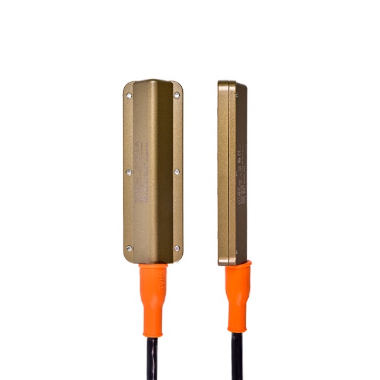
배관 외벽에 부착해 감온형 발열체로 동파를 방지하는 기본형 메탈히터입니다. 전용 제어반에서 배관 구간별 M-BOX 단위로 실시간 예측 모니터링과 장기 운영 데이터 기록이 가능합니다.
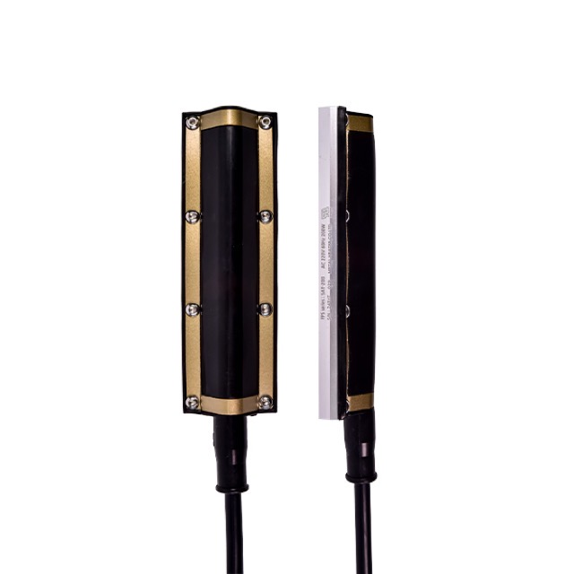
하우징을 내열 실리콘으로 마감해 밀착성과 내열성을 높인 부착형 메탈히터입니다.
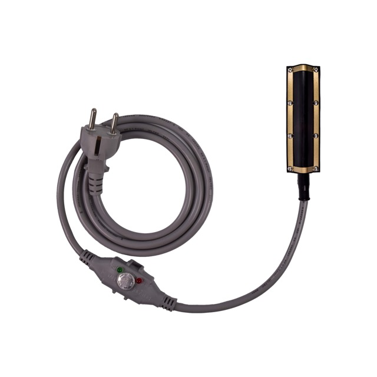
전원 플러그와 온도조절기를 하나로 통합해 별도 제어반 없이 바로 꽂아 쓸 수 있는 일체형 메탈히터입니다.
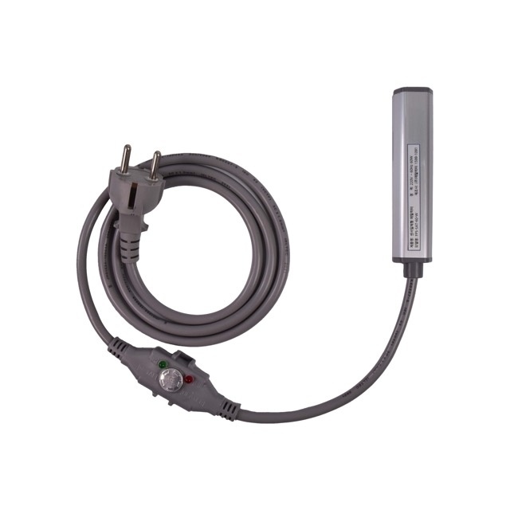
소형 배관·동파 취약 구간에 적용하는 콤팩트형 일체형 메탈히터입니다.
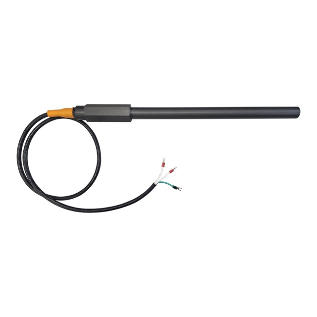
소화수조 등 저수조 내부에 직접 삽입해 저장수 자체의 동결을 방지하는 삽입형 메탈히터입니다.
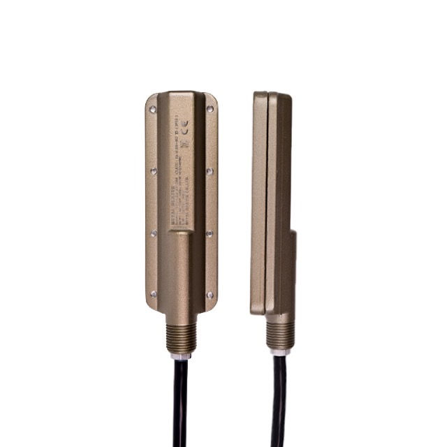
가스·분진 폭발 위험이 있는 구역에 적용하는 내압방폭구조(Exd) 메탈히터입니다.
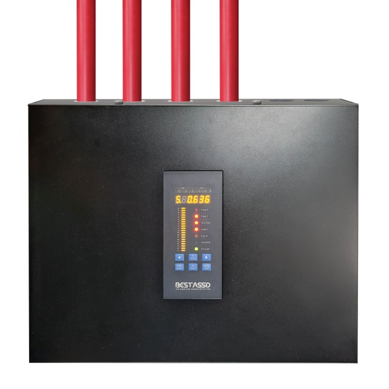
고출력 LED 광원으로 초기 단계의 미세한 연기 입자를 감지하는 공기흡입형 감지기입니다. VESDA와 함께 현장 조건에 맞춰 선택하는 국내 라인업입니다.
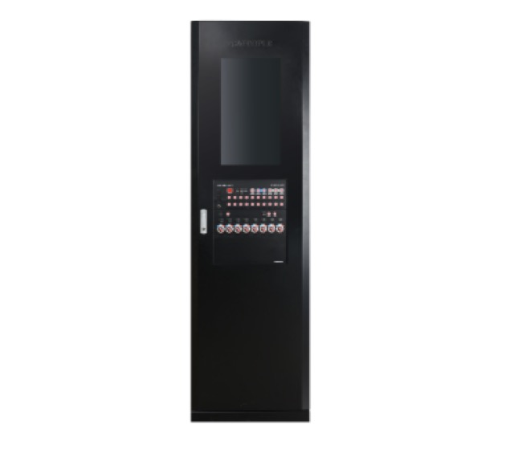
GR형 복합식 화재수신기로, 감지기·중계기 신호를 수집해 화재를 표시·경보하고 소화설비를 제어하는 소방시설의 핵심 장비입니다. FS&PEOPLE 공식 대리점으로서 공급합니다.
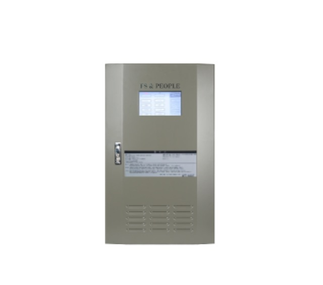
수신기와 중계기·감지기 사이에서 신호를 중계하는 장비로, 입력 8,000회로·출력 8,000회로를 수용해 대규모 현장의 신호 전달을 담당합니다.
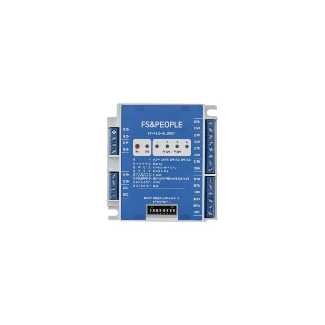
현장의 감지기·설비 접점 신호를 수신기로 전달하는 중계기로, 입출력 회로 구성에 따라 4회로형과 2회로형 중 선택해 적용합니다.
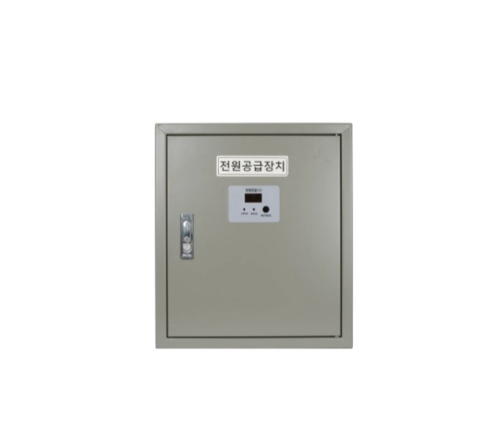
상용 AC전원과 예비전원(배터리)을 상시 감시하다가 정전 시 자동으로 예비전원으로 전환해, 화재수신기 등 연계 설비에 전원을 안정적으로 공급하는 전원공급반입니다. FS&PEOPLE 공식 대리점으로서 공급합니다.
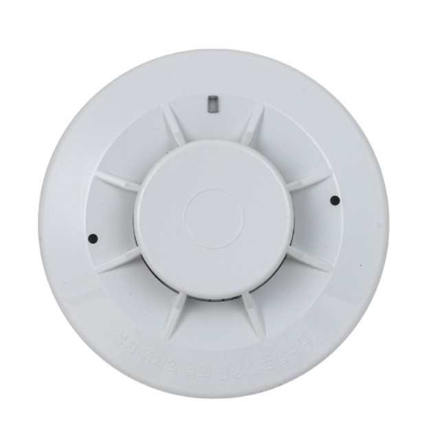
포토센서·IR-LED로 연기 농도를 감지하는 아날로그 연기식 감지기입니다.
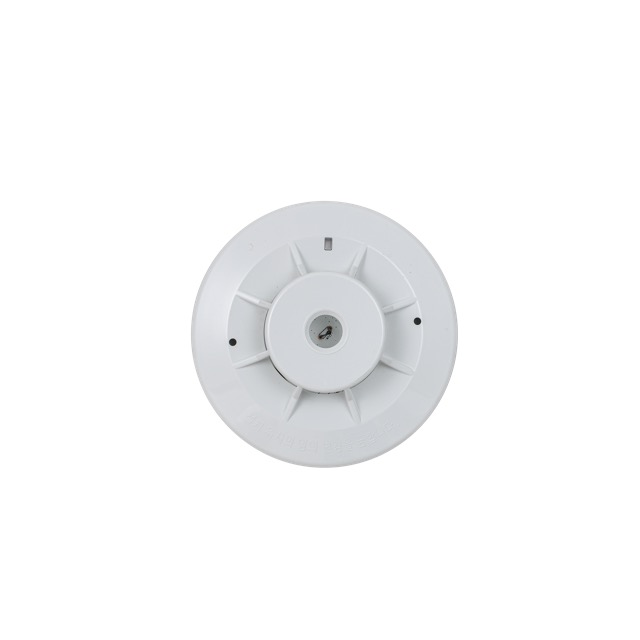
온도센서(써미스터)로 온도를 감지하는 아날로그 열식 감지기로, 일반형과 방수형이 있습니다.
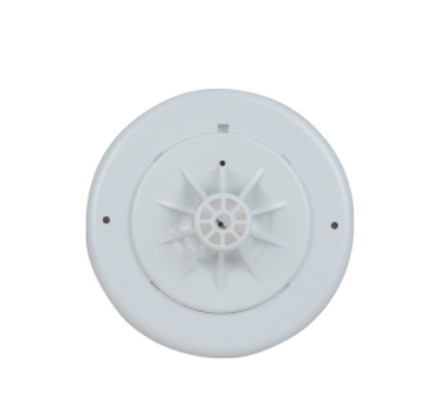
실온 대비 온도 상승률로 화재를 감지하는 차동식 스포트형 감지기로, 일반형과 방수형이 있습니다.
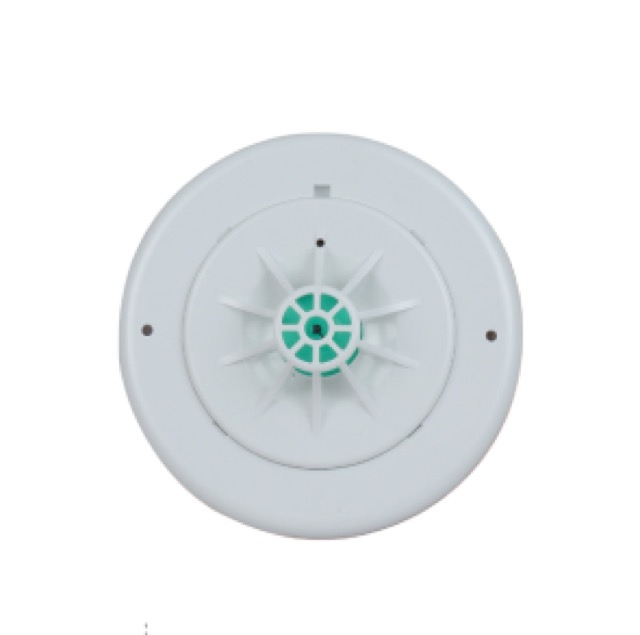
설정 온도(70℃) 이상에서 작동하는 정온식 스포트형 감지기로, 일반형과 방수형이 있습니다.
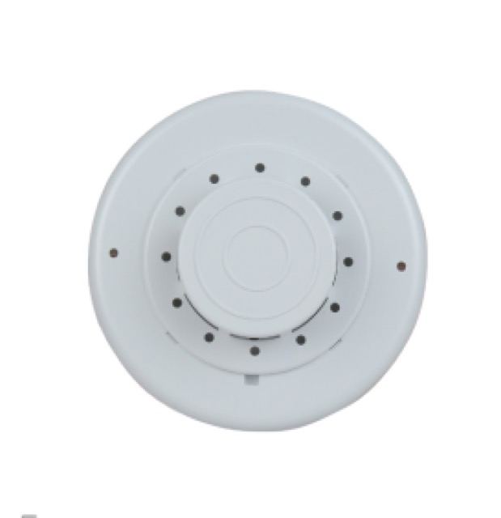
연기농도 15% 이상에서 작동하는 광전식 스포트형 감지기입니다.
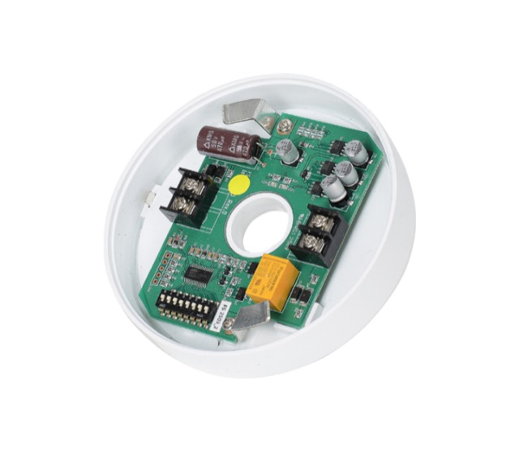
회로 단락 시 고장 구간을 분리해 나머지 감지기 통신을 보호하는 절연장치입니다.
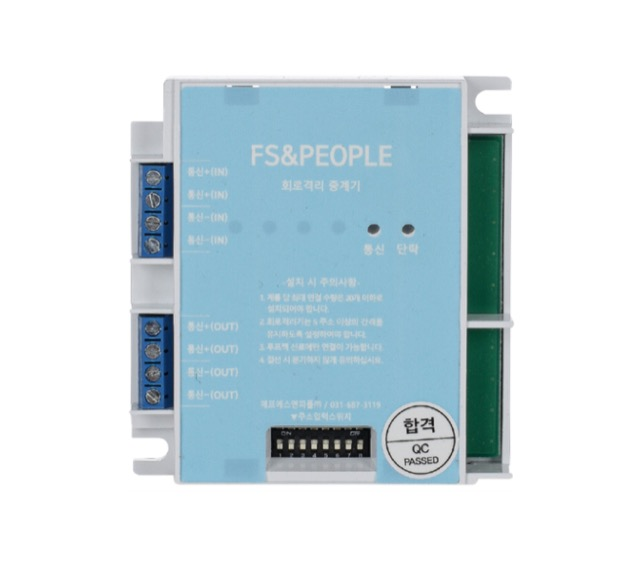
중계기 회로의 단락 구간을 분리해 통신 장애 확산을 막는 절연장치입니다.
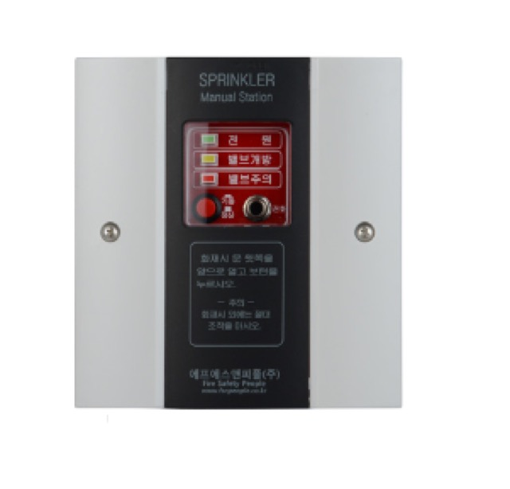
스프링클러 설비를 수동으로 기동시키는 현장 조작함입니다.
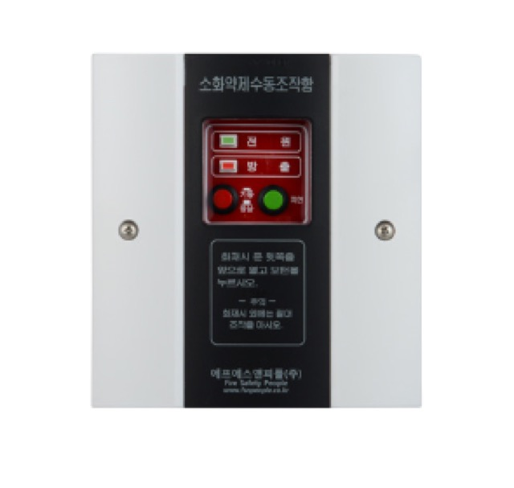
가스계 등 소화약제 방출설비를 수동으로 기동시키는 현장 조작함입니다.
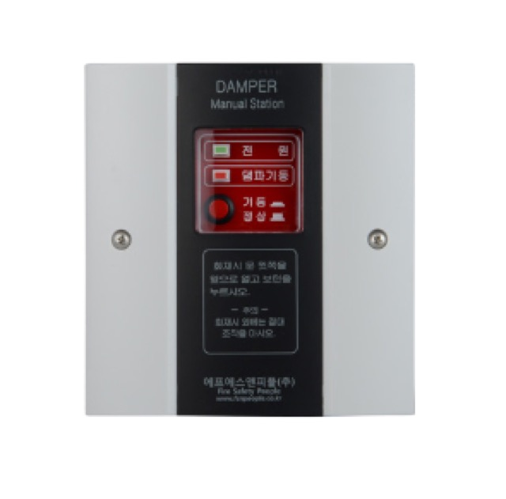
제연설비 댐퍼를 수동으로 개폐시키는 현장 조작함입니다.
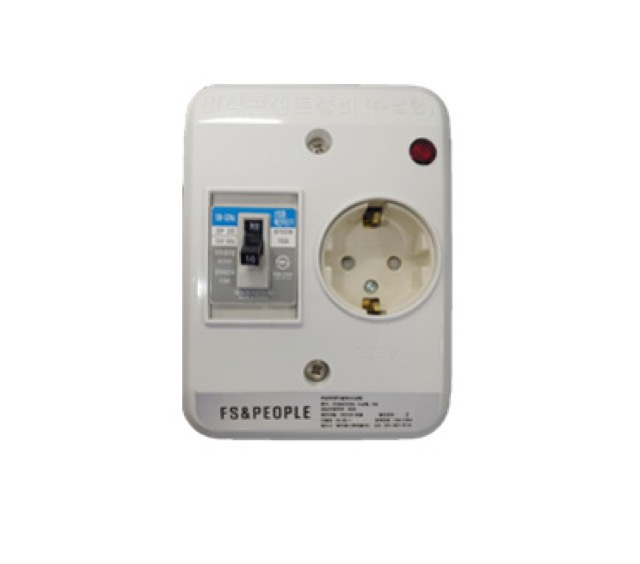
화재 시 소방대의 조명·파괴기기 등에 전원을 공급하는 비상콘센트입니다.
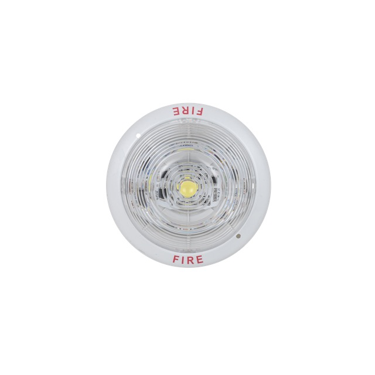
화재 시 섬광으로 경보를 알리는 시각경보기로, 비동기식·동기식 모두 지원합니다.
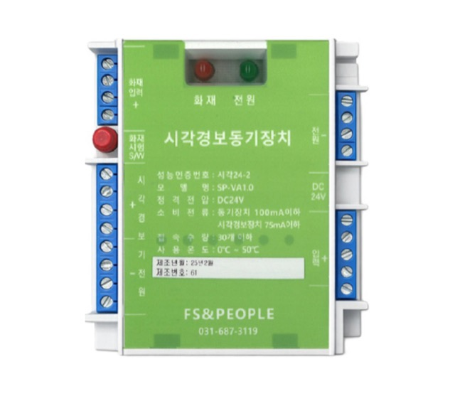
여러 대의 시각경보기가 동시에 점멸하도록 신호를 동기화하는 장치입니다.
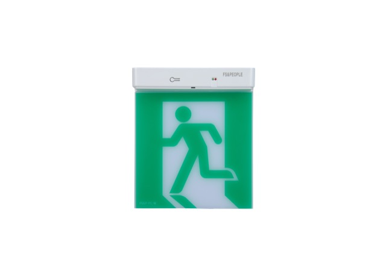
출입구 위치를 알리는 피난구유도등으로, 천장형 대형(표시면 250×250mm) 양면/단면 겸용입니다.
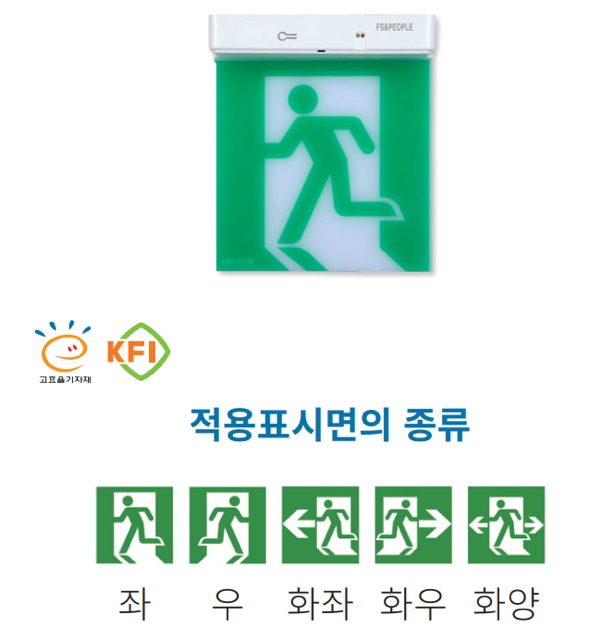
출입구 위치를 알리는 피난구유도등으로, 천장형 중형(표시면 200×200mm) 양면/단면 겸용입니다.

출입구 위치를 알리는 피난구유도등으로, 천장형 소형(표시면 130×130mm) 양면/단면 겸용입니다.
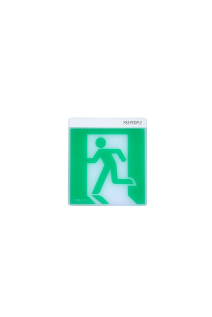
출입구 위치를 알리는 피난구유도등으로, 벽부착형 대형(표시면 250×250mm) 단면입니다.

출입구 위치를 알리는 피난구유도등으로, 벽부착형 중형(표시면 200×200mm) 단면입니다.

출입구 위치를 알리는 피난구유도등으로, 벽부착형 소형(표시면 130×130mm) 단면입니다.
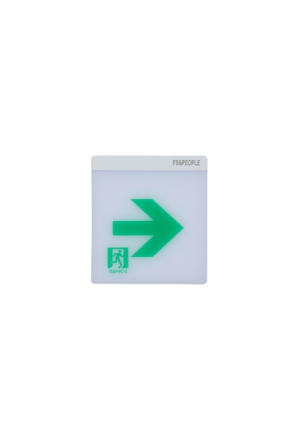
복도 피난 방향을 안내하는 통로유도등으로, 벽부착형 소형(표시면 130×130mm) 단면입니다.
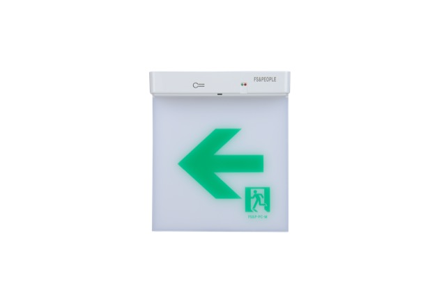
거실·사무공간 등의 피난 방향을 안내하는 통로유도등으로, 천장형 중형(표시면 200×200mm) 양면/단면 겸용입니다.

거실·사무공간 등의 피난 방향을 안내하는 통로유도등으로, 벽부착형 중형(표시면 200×200mm) 단면입니다.
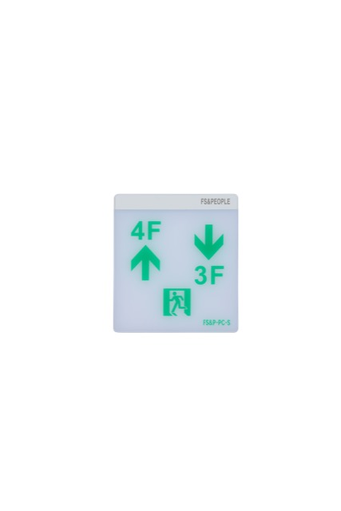
계단실의 피난 방향을 안내하는 통로유도등으로, 벽부착형 중형(표시면 200×200mm) 단면입니다.

계단실의 피난 방향을 안내하는 통로유도등으로, 벽부착형 소형(표시면 130×130mm) 단면입니다.
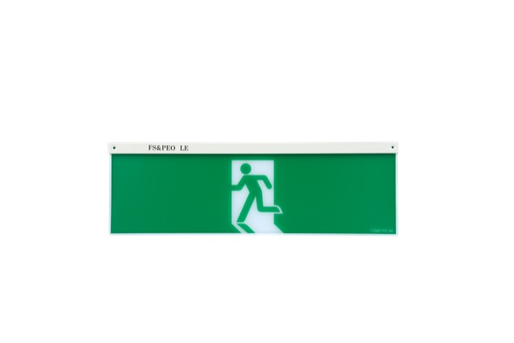
출입구 위치를 알리는 피난구유도등으로, 벽부착형 와이드(표시면 500×140mm) 단면입니다.
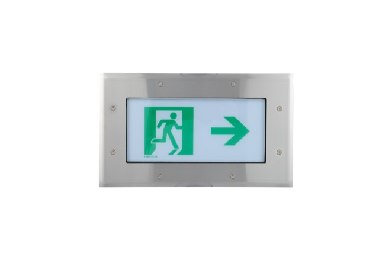
바닥에 매립해 저시야 상황에서도 피난 방향을 안내하는 바닥통로유도등 중형(표시면 280×135mm)입니다.
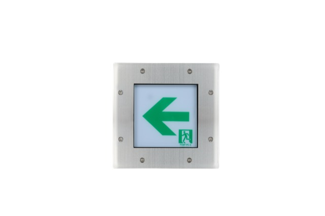
바닥에 매립해 저시야 상황에서도 피난 방향을 안내하는 바닥통로유도등 소형(표시면 136×136mm)입니다.
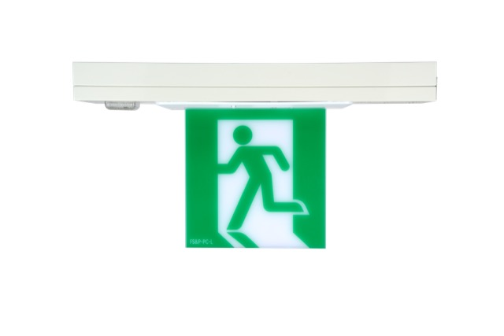
화재 시 음성안내와 점멸로 피난을 유도하는 음성점멸형 피난구유도등으로, 천장형 대형(표시면 250×250mm)입니다.
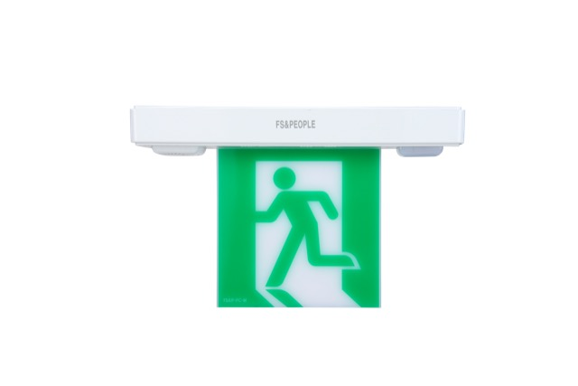
화재 시 음성안내와 점멸로 피난을 유도하는 음성점멸형 피난구유도등으로, 천장형 중형(표시면 200×200mm)입니다.
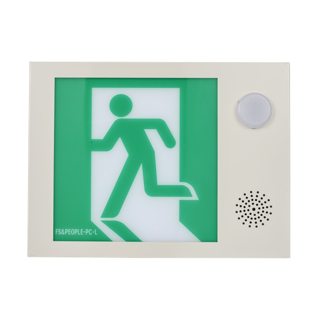
화재 시 음성안내와 점멸로 피난을 유도하는 음성점멸형 피난구유도등으로, 벽부착형 대형(표시면 250×250mm)입니다.
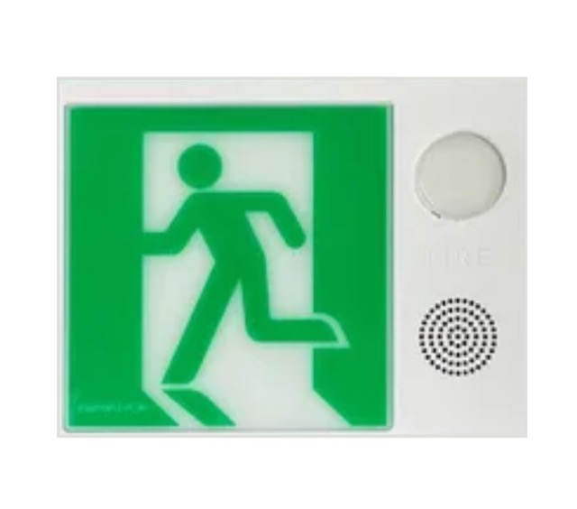
화재 시 음성안내와 점멸로 피난을 유도하는 음성점멸형 피난구유도등으로, 벽부착형 중형(표시면 200×200mm)입니다.
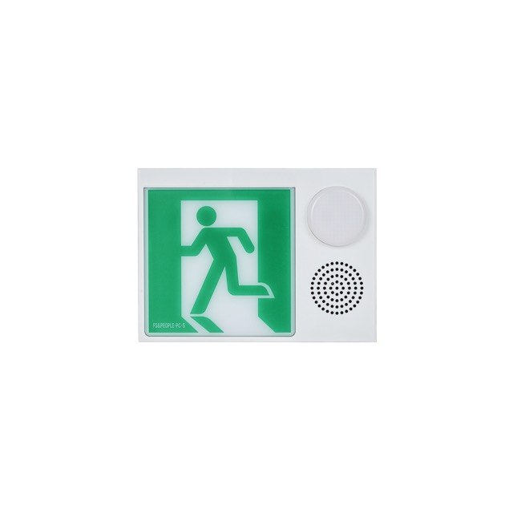
화재 시 음성안내와 점멸로 피난을 유도하는 음성점멸형 피난구유도등으로, 벽부착형 소형(표시면 130×130mm)입니다.
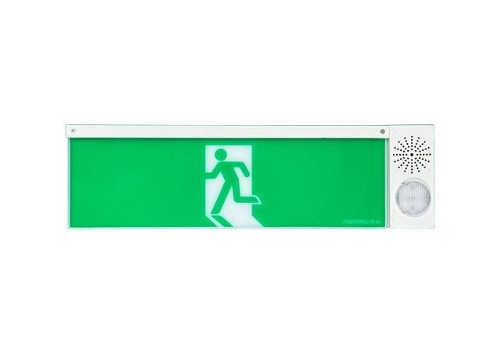
화재 시 음성안내와 점멸로 피난을 유도하는 음성점멸형 피난구유도등으로, 벽부착형 와이드(표시면 500×140mm)입니다.
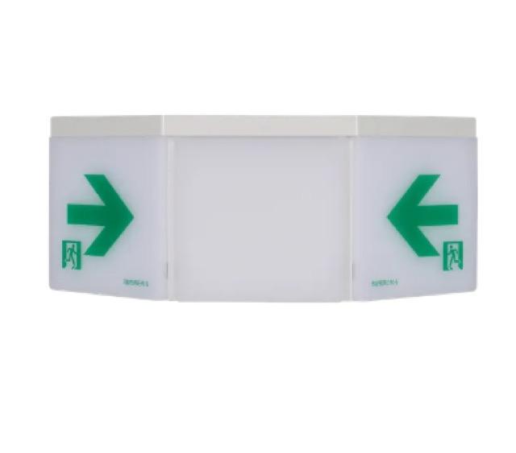
양쪽 복도에서 동시에 보이도록 2면에 표시면을 둔 입체형 복도통로유도등(소형)입니다.
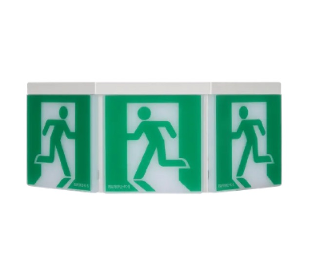
3개 면에서 동시에 보이고 음성안내·점멸로 피난을 유도하는 입체형 피난구유도등(소형)입니다.
법정 등록 면허와 국제 표준 인증을 기반으로 안전하고 검증된 시공을 수행합니다. 카드를 클릭하면 인증서 원본을 확인하고 내려받을 수 있습니다.
Business Registration Certificate
인증서 보기Registration Certificate for Fire Protection System
인증서 보기Registration Certificate for Fire Protection Design
인증서 보기품질경영시스템 인증 · Quality Management
인증서 보기안전보건경영시스템 인증 · Occupational Health & Safety
인증서 보기Notifier · Fire-Lite 2021
화재수신기 및 유도등 2021. 06
설계 검토, 견적, 입찰 참여 문의를 받습니다. 전화가 가장 빠르고, 도면이나 사양이 있으시면 메일로 보내주시면 검토 후 회신드립니다.

· 원본 파일을 내려받으려면 다운로드를 누르세요
| 제품명 | 수신기 |
|---|---|
| 모델명 | SP-GR1.0_1000 |
| 형식승인번호 | 수24-2, 수24-2-1 |
| KC인증번호 | R-R-FSp-SP-GR10-1000 |
| 형식 | GR형복합식 · AC220V · LCD식 · 디지털/반도체/아날로그식 축적·비축적 겸용 · (옥내외 소화전·스프링클러)설비 · (물·분무·포)소화설비 · 제연설비 · 가스누설경보설비 |
| 계통 당 최대 회로 수 | 1계통 250 Address × 4회로 = 2,000회로 |
| 기기 | 최대 16계통 × 250 Address = 4,000 Address(중계기·아날로그감지기) |
| 회로 | 최대 16계통 × 250개 Address × 4회로 = 16,000회로 |
| 통신방식 | Local: 전압제어 다중접속방식 / Network: RS-485 |
| 공칭축적시간 | 30초, 60초 |
| 환경조건 | -10℃ ~ 50℃ · 상대습도 10~95% |
| 정격전압 | AC 220V / 60Hz |
| 정격용량 | DC 24V / 15A |
| 예비전원 | DC 12V, 18Ah × 2개(연축전지) |
| 크기 | 600 × 2,000 × 600mm (LCD 24형 화면) |
| 외함재질 | 1.6mm Steel |
| 색상 | 검정 / 아이보리(5Y7/1) |
| 제품명 | 중계반 |
|---|---|
| 모델명 | SP-RS1.0 |
| 형식승인번호 | 중24-22 |
| KC인증번호 | R-R-FSp-SP-RS10 |
| 형식 | AC220V · DC24V · GR형 · 반도체식 · 입력 8,000회로 · 출력 8,000회로 |
| 계통 당 최대 회로 수 | 1계통 250 Address × 4회로 = 1,000회로 |
| 기기 | 최대 8계통 × 250 Address = 2,000 Address(중계기·아날로그감지기) |
| 회로 | 최대 8계통 × 250개 Address × 4회로 = 8,000회로 |
| 통신방식 | 전압제어 다중통신방식 / RS-485 |
| 공칭축적시간 | 10초 ~ 60초 |
| 환경조건 | -10℃ ~ 50℃ · 상대습도 10~95% |
| 정격전압 | AC 220V / 60Hz |
| 정격용량 | DC 24V / 15A |
| 예비전원 | DC 12V, 7.0Ah × 2개(연축전지) |
| 크기 | 400 × 650 × 165mm |
| 외함재질 | 1.6mm Steel |
| 색상 | 검정 / 아이보리(5Y7/1) |
| 제품명 | 중계기 |
|---|---|
| 모델명 | SP-R1.0-4L(4:4회로) |
| 형식승인번호 | 중23-66 |
| KC인증번호 | R-R-FSp-SP-R10-4L |
| 형식 | GR형용 · DC24V · 입력 4회로 · 출력 4회로 |
| 계통 당 최대 회로 수 | 차동식감지기 50개 · 정온식감지기 50개 · 연기감지기 30개 |
| 접속가능기기 | 수신기(수24-2, 수24-2-1) · 중계반(중24-22) |
| 회로 | Max 250개 (001~250 사용) |
| 통신방식 | NO Type 기기접점입력, 일반감지기 입력 등 |
| 공칭축적시간 | 축적 시 30초 / 60초 |
| 환경조건 | -10℃ ~ 50℃ · 상대습도 10~95%(결로되지 않는 조건) |
| 정격전압 | DC 24V |
| 정격용량 | 입력부 감시전류 설계범위 1 ~ 9mA |
| 예비전원 | 해당없음 |
| 크기 | 85 × 90 × 21.3mm |
| 외함재질 | PC난연 |
| 색상 | 아이보리 |
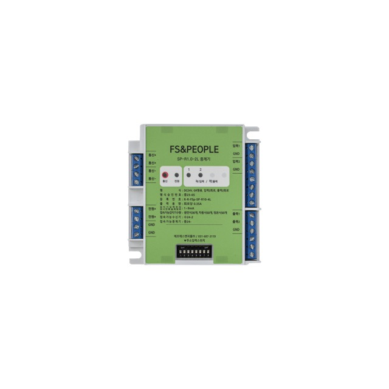
| 제품명 | 중계기 |
|---|---|
| 모델명 | SP-R1.0-4L(2:2회로) |
| 형식승인번호 | 중23-65 |
| KC인증번호 | R-R-FSp-SP-R10-4L |
| 형식 | GR형용 · DC24V · 입력 2회로 · 출력 2회로 |
| 계통 당 최대 회로 수 | 차동식감지기 50개 · 정온식감지기 50개 · 연기감지기 30개 |
| 접속가능기기 | 수신기(수24-2, 수24-2-1) · 중계반(중24-22) |
| 회로 | Max 250개 (001~250 사용) |
| 통신방식 | NO Type 기기접점입력, 일반감지기 입력 등 |
| 공칭축적시간 | 30초, 60초 |
| 환경조건 | -10℃ ~ 50℃ · 상대습도 10~95%(결로되지 않는 조건) |
| 정격전압 | DC 24V |
| 정격용량 | 입력부 감시전류 설계범위 1 ~ 9mA |
| 예비전원 | 해당없음 |
| 크기 | 85 × 90 × 21.3mm |
| 외함재질 | PC난연 |
| 색상 | 아이보리 |
| 제품명 | 아날로그 연기식감지기 |
|---|---|
| 모델명 | SP-ASS1.0 |
| 종별 | 아날로그 광전식감지기 |
| KC인증번호 | R-R-FSp-SP-ASS10 |
| 형식 | 아날로그식 · 보통형 · 재용형 · 비방수형 |
| 감지 방식 | 수광부(포토센서) · 발광부(IR-LED)에 의한 농도감지 |
| 계통당 접속수 | 1계통당 250개 사용 |
| 사용 전압 | DC 11V ~ 13V |
| 소비 전류 | 감시 20㎂ · 화재동작 20mA |
| 공칭감지농도 | 5% ~ 15% (화재감지 농도 설정 가능) |
| 환경조건 | -10℃ ~ 50℃ · 상대습도 0~90%(결로되지 않는 조건) |
| 상태 표시 | LED 점멸(적색) 정상작동 · LED 점등(적색) 화재 |
| 색상 | 유백색 |
| 접속 가능기기 | SP-GR1.0, RS1.0 |
| 제품명 | 아날로그 열식감지기 |
|---|---|
| 모델명 | SP-ASH1.0 / SP-ASH1.0W(방수형) |
| 종별 | 아날로그 열식감지기, 아날로그 열식감지기(방수형) |
| KC인증번호 | R-R-FSp-SP-ASH10, R-R-FSp-SP-ASH10W(방수형) |
| 형식 | 아날로그식 · 보통형 · 재용형 · 비방수형 · (방수형) |
| 감지 방식 | 온도센서(써미스터)에 의한 온도감지 |
| 계통당 접속수 | 1계통당 250개 사용 |
| 사용 전압 | DC 11V ~ 13V |
| 소비 전류 | 감시 20㎂ · 화재동작 20mA |
| 공칭감지농도 | 40℃ ~ 80℃ (화재감지 온도 설정 가능) |
| 환경조건 | -10℃ ~ 50℃ · 상대습도 0~90%(결로되지 않는 조건) |
| 상태 표시 | LED 점멸(적색) 정상작동 · LED 점등(적색) 화재 |
| 색상 | 유백색 |
| 접속 가능기기 | SP-GR1.0, RS1.0, R1.0-4,2 |
| 제품명 | 차동식 감지기 |
|---|---|
| 모델명 | FS-SHR10(일반형) / FS-SHR10W(방수형) |
| 종별 | 차동식 스포트형 감지기, 차동식 방수형 감지기 |
| KC인증번호 | R-RS-FSp-FS-SHR10, R-RS-FSp-FS-SHR10W |
| 형식승인번호 | 감21-9, 감21-68(방수형) |
| 감지 방식 | 온도센서(써미스터)에 의한 온도감지 |
| 계통당 접속수 | 최대 50개 |
| 사용 전압 | DC 24V |
| 소비 전류 | 감시 5.5㎂ · 화재동작 20mA |
| 공칭감지농도 | 실온보다 +30℃ 이상 시 화재감지 |
| 환경조건 | -10℃ ~ 50℃ · 상대습도 10~90%(결로되지 않는 조건) |
| 색상 | 유백색 |
| 제품명 | 정온식 감지기 |
|---|---|
| 모델명 | FS-SHF10(일반형) / FS-SHF10W(방수형) |
| 종별 | 정온식 스포트형 감지기, 정온식 방수형 감지기 |
| KC인증번호 | R-RS-FSp-FS-SHF10, R-RS-FSp-FS-SHF10W(방수형) |
| 형식 | DC24V · 1종 · 70℃ · 보통형 · 재용형 · 비방수형 · 방수형 · 반도체식 |
| 계통당 접속수 | 최대 50개 |
| 사용 전압 | DC 24V |
| 소비 전류 | 감시 5.5㎂ · 화재동작 20mA |
| 공칭감지농도 | 실온 70℃ 이상 시 화재감지 |
| 환경조건 | -10℃ ~ 50℃ · 상대습도 10~90%(결로되지 않는 조건) |
| 색상 | 유백색 |
| 제품명 | 광전식 감지기 |
|---|---|
| 모델명 | FS-SS10 |
| 종별 | 광전식 스포트형 감지기 |
| KC인증번호 | R-R-FSp-FS-SS10 |
| 형식승인번호 | 감21-12 |
| 감지 방식 | 수광부(포토센서) · 발광부(IR-LED)에 의한 농도감지 |
| 계통당 접속수 | 최대 30개 |
| 사용 전압 | DC 24V |
| 소비 전류 | 감시 20㎂ · 화재동작 20mA |
| 공칭감지농도 | 연기농도 15% 이상 시 화재감지 |
| 환경조건 | -10℃ ~ 50℃ · 상대습도 10~90%(결로되지 않는 조건) |
| 색상 | 유백색 |
| 제품명 | 감지기타입 아이솔레이터 |
|---|---|
| 모델명 | FS-LP-ISO |
| 접속 방식 | 전압제어 다중접속방식 |
| 계통당 접속수 | 계통당 20개 이하로 설치 |
| 사용 전압 | 통신전압 DC 24V |
| 소비 전류 | 정격전류 5mA |
| 환경조건 | 0℃ ~ 50℃ |
| 색상·크기 | 유백색, Ø105mm |
| 접속 가능기기 | 아날로그 광전식/정온식 감지기, SP-GR1.0, SP-RS1.0 |
| 제품명 | 중계기타입 아이솔레이터 |
|---|---|
| 모델명 | FS-LP-ISO |
| 접속 방식 | 전압제어 다중접속방식 |
| 계통당 접속수 | 계통당 20개 이하로 설치 |
| 사용 전압 | 통신전압 DC 24V |
| 소비 전류 | 정격전류 5mA |
| 환경조건 | 0℃ ~ 50℃ |
| 색상·크기 | 하늘색, 85mm × 90mm × 20mm |
| 접속 가능기기 | 2회로/4회로 중계기 접속, SP-GR1.0, SP-RS1.0 |
| 제품명 | 스프링클러 수동조작함 |
|---|---|
| 재질 | ABS난연 / Steel |
| 사용 전압 | DC 24V / 100mA |
| 환경조건 | -10℃ ~ 50℃ · 상대습도 95% RH |
| 색상 | 회색 |
| 크기(노출형) | W160 × H170 × D57(ABS난연) / W160 × H170 × D80(Steel) |
| 크기(매입형) | W140 × H150 × D57(ABS난연) / W160 × H170 × D80(Steel) |
| 제품명 | 소화약제 수동조작함 |
|---|---|
| 재질 | ABS난연 / Steel |
| 사용 전압 | DC 24V / 100mA |
| 환경조건 | -10℃ ~ 50℃ · 상대습도 95% RH |
| 색상 | 회색 |
| 크기(노출형) | W160 × H170 × D57(ABS난연) / W160 × H170 × D80(Steel) |
| 크기(매립형) | W140 × H150 × D57(ABS난연) / W160 × H170 × D80(Steel) |
| 제품명 | 댐퍼 수동조작함 |
|---|---|
| 재질 | ABS난연 / Steel |
| 사용 전압 | DC 24V / 100mA |
| 환경조건 | -10℃ ~ 50℃ · 상대습도 95% RH |
| 색상 | 회색 |
| 크기(노출형) | W160 × H170 × D57(ABS난연) / W160 × H170 × D80(Steel) |
| 크기(매입형) | W140 × H150 × D57(ABS난연) / W160 × H170 × D80(Steel) |
| 제품명 | 비상콘센트 |
|---|---|
| 모델명 | SP-O16A |
| 종별 | 비상콘센트 |
| 형식 | 비콘22-2 |
| 재질 | 난연 PC |
| 사용 전압 | 단상 AC 220V / 16A / 50~60Hz |
| 환경조건 | -10℃ ~ 50℃ |
| 색상 | 유백색 |
| 크기 | 104 × 141 × 76mm |
| 제품명 | 시각경보기 |
|---|---|
| 모델명 | SP-VA1.0 |
| 종별 | 비동기식, 동기식, 옥내형, 비방수형 |
| 형식승인번호 | 시각24-1, 시각24-2(동기식) |
| 재질 | 난연 PC |
| 사용 전압 | DC 24V |
| 환경조건 | -10℃ ~ 50℃ · 상대습도 10~95%(결로되지 않는 조건) |
| 색상 | 적색, 백색 |
| 소비전력 | 작동 시 75mA |
| 크기 | ⌀108mm |
| 제품명 | 시각경보장치용 동조장치 |
|---|---|
| 모델명 | SP-A1.0 |
| 종별 | 동기식, LED식 |
| 성능인증번호 | 시각24-2 |
| 사용 전압 | DC 24V |
| 환경조건 | 0℃ ~ 50℃ |
| 색상 | 연두색 |
| 소비전력 | 시각경보장치 75mA 이하, 동기장치 100mA 이하 |
| 크기 | 85 × 90 × 21.3mm |
| 비고 | 접속수량 30개 이하 |
| 제품명 | 피난구유도등 천장형 대형 양/단면 |
|---|---|
| 모델명 | SP-E-C250B/S |
| 형식승인번호 | 유23-69 |
| 소비전력 | 6W이하 |
| 램프사양 | 고휘도 LED |
| 예비전원 | DC4.8V / 600mAh Ni-Cd |
| 재질 | 난연PC, ABC난연, 도광판(아크릴) |
| 색상 | 아이보리 |
| 정격입력전압 | AC220V / 60Hz |
| 동작온도범위 | -10℃ ~ 50℃ |
| 사용습도범위 | 0 ~ 90% |
| 외형크기 | W256×H288×D92mm |
| 표시면 크기 | 250mm×250mm |
| 제품명 | 피난구유도등 천장형 중형 양/단면 |
|---|---|
| 모델명 | SP-E-C200B/S |
| 형식승인번호 | 유22-105 |
| 소비전력 | 6W이하 |
| 램프사양 | 고휘도 LED |
| 예비전원 | DC3.6V / 600mAh Ni-Cd |
| 재질 | 난연PC, ABC난연, 도광판(아크릴) |
| 색상 | 아이보리 |
| 정격입력전압 | AC220V / 60Hz |
| 동작온도범위 | -10℃ ~ 50℃ |
| 사용습도범위 | 0 ~ 90% |
| 외형크기 | W207×H238×D94mm |
| 표시면 크기 | 200mm×200mm |
| 제품명 | 피난구유도등 천장형 소형 양/단면 |
|---|---|
| 모델명 | SP-E-C130B/S |
| 형식승인번호 | 유23-21 |
| 소비전력 | 2W이하 |
| 램프사양 | 고휘도 LED |
| 예비전원 | DC3.6V / 300mAh Ni-Cd |
| 재질 | 난연PC, ABC난연, 도광판(아크릴) |
| 색상 | 아이보리 |
| 정격입력전압 | AC220V / 60Hz |
| 동작온도범위 | -10℃ ~ 50℃ |
| 사용습도범위 | 0 ~ 90% |
| 외형크기 | W137×H168×D92mm |
| 표시면 크기 | 130mm×130mm |
| 제품명 | 피난구유도등 벽부 대형 단면 |
|---|---|
| 모델명 | SP-E-W250S |
| 형식승인번호 | 유23-68 |
| 소비전력 | 6W 이하 |
| 램프사양 | 고휘도 LED |
| 예비전원 | DC3.6V / 600mAh Ni-Cd |
| 재질 | 난연PC, ABC난연, 도광판(아크릴) |
| 색상 | 아이보리 |
| 정격입력전압 | AC220V / 60Hz |
| 동작온도범위 | -10℃ ~ 50℃ |
| 사용습도범위 | 0 ~ 90% |
| 외형크기 | W260×H275×D44mm |
| 표시면 크기 | 250mm×250mm |
| 제품명 | 피난구유도등 벽부 중형 단면 |
|---|---|
| 모델명 | SP-E-W200S |
| 형식승인번호 | 유22-100 |
| 소비전력 | 4W 이하 |
| 램프사양 | 고휘도 LED |
| 예비전원 | DC3.6V / 600mAh Ni-Cd |
| 재질 | 난연PC, ABC난연, 도광판(아크릴) |
| 색상 | 아이보리 |
| 정격입력전압 | AC220V / 60Hz |
| 동작온도범위 | -10℃ ~ 50℃ |
| 사용습도범위 | 0 ~ 90% |
| 외형크기 | W210×H225×D44mm |
| 표시면 크기 | 200mm×200mm |
| 제품명 | 피난구유도등 벽부 소형 단면 |
|---|---|
| 모델명 | SP-E-W130S |
| 형식승인번호 | 유23-12 |
| 소비전력 | 2W 이하 |
| 램프사양 | 고휘도 LED |
| 예비전원 | DC3.6V / 300mAh Ni-Cd |
| 재질 | 난연PC, ABC난연, 도광판(아크릴) |
| 색상 | 아이보리 |
| 정격입력전압 | AC220V / 60Hz |
| 동작온도범위 | -10℃ ~ 50℃ |
| 사용습도범위 | 0 ~ 90% |
| 외형크기 | W140×H155×D44mm |
| 표시면 크기 | 130mm×130mm |
| 제품명 | 복도통로유도등 벽부 소형 단면 |
|---|---|
| 모델명 | SP-E-W130S-C |
| 형식승인번호 | 유23-11 |
| 소비전력 | 2W 이하 |
| 램프사양 | 고휘도 LED |
| 예비전원 | DC3.6V / 300mAh Ni-Cd |
| 재질 | 난연PC, ABC난연, 도광판(아크릴) |
| 색상 | 아이보리 |
| 정격입력전압 | AC220V / 60Hz |
| 동작온도범위 | -10℃ ~ 50℃ |
| 사용습도범위 | 0 ~ 90% |
| 외형크기 | W140×H155×D44mm |
| 표시면 크기 | 130mm×130mm |
| 제품명 | 거실통로유도등 천장형 중형 양/단면 |
|---|---|
| 모델명 | SP-E-C200B/S-L |
| 형식승인번호 | 유22-106 |
| 소비전력 | 4W이하 |
| 램프사양 | 고휘도 LED |
| 예비전원 | DC3.6V / 600mAh Ni-Cd |
| 재질 | 난연PC, ABC난연, 도광판(아크릴) |
| 색상 | 아이보리 |
| 정격입력전압 | AC220V / 60Hz |
| 동작온도범위 | -10℃ ~ 50℃ |
| 사용습도범위 | 0 ~ 90% |
| 외형크기 | W207×H238×D94mm |
| 표시면 크기 | 200mm×200mm |
| 제품명 | 거실통로유도등 벽부 중형 단면 |
|---|---|
| 모델명 | SP-E-W200S-L |
| 형식승인번호 | 유22-108 |
| 소비전력 | 4W 이하 |
| 램프사양 | 고휘도 LED |
| 예비전원 | DC3.6V / 600mAh Ni-Cd |
| 재질 | 난연PC, ABC난연, 도광판(아크릴) |
| 색상 | 아이보리 |
| 정격입력전압 | AC220V / 60Hz |
| 동작온도범위 | -10℃ ~ 50℃ |
| 사용습도범위 | 0 ~ 90% |
| 외형크기 | W210×H225×D44mm |
| 표시면 크기 | 200mm×200mm |
| 제품명 | 계단통로유도등 벽부 중형 단면 |
|---|---|
| 모델명 | FS-E-W200S-S |
| 형식승인번호 | 유20-17 |
| 소비전력 | 4W 이하 |
| 램프사양 | 고휘도 LED |
| 예비전원 | DC13.2V / 600mAh Ni-Cd |
| 재질 | 난연PC, ABC난연, 도광판(아크릴) |
| 색상 | 아이보리 |
| 정격입력전압 | AC220V / 60Hz |
| 동작온도범위 | -10℃ ~ 50℃ |
| 사용습도범위 | 0 ~ 90% |
| 외형크기 | W210×H225×D44mm |
| 표시면 크기 | 200mm×200mm |
| 제품명 | 계단통로유도등 벽부 소형 단면 |
|---|---|
| 모델명 | SP-E-W130S-S |
| 형식승인번호 | 유23-13 |
| 소비전력 | 2.6W이하 |
| 램프사양 | 고휘도 LED |
| 예비전원 | DC9.6V / 600mAh Ni-Cd |
| 재질 | 난연PC, ABC난연, 도광판(아크릴) |
| 색상 | 아이보리 |
| 정격입력전압 | AC220V / 60Hz |
| 동작온도범위 | -10℃ ~ 50℃ |
| 사용습도범위 | 0 ~ 90% |
| 외형크기 | W140×H155×D44mm |
| 표시면 크기 | 130mm×130mm |
| 제품명 | 피난구유도등 벽부착형 중형 와이드 |
|---|---|
| 모델명 | SP-E-W500S |
| 형식승인번호 | 유23-24-1 |
| 소비전력 | 4W 이하 |
| 램프사양 | 고휘도 LED |
| 예비전원 | 4.8V / 600mAh Ni-Cd |
| 재질 | ST, 난연PC, 아크릴 |
| 색상 | 아이보리 |
| 정격입력전압 | AC220V / 60Hz |
| 동작온도범위 | -10℃ ~ 50℃ |
| 사용습도범위 | 0 ~ 90% |
| 외형크기 | W510×H165×D50mm |
| 표시면 크기 | 500mm×140mm |
| 제품명 | 바닥통로유도등 중형 |
|---|---|
| 모델명 | FS-E-FR280S-P |
| 형식승인번호 | 유19-58 |
| 소비전력 | 4W 이하 |
| 램프사양 | 고휘도 LED |
| 예비전원 | 3.6V / 700mAh Ni-Cd |
| 재질 | SUS, GI, 난연PC, 도광판(아크릴) |
| 색상 | 은색 |
| 정격입력전압 | AC220V / 60Hz |
| 동작온도범위 | -10℃ ~ 50℃ |
| 사용습도범위 | 0 ~ 90% |
| 외형크기 | W390×H230×D67mm |
| 표시면 크기 | 280mm×135mm |
| 제품명 | 바닥통로유도등 소형 |
|---|---|
| 모델명 | FS-E-FR130S-C |
| 형식승인번호 | 유20-88-1 |
| 소비전력 | 2.6W이하 |
| 램프사양 | 고휘도 LED |
| 예비전원 | DC3.6V / 700mAh Ni-Cd |
| 재질 | SUS, GI, 난연PC, 도광판(아크릴) |
| 색상 | 은색 |
| 정격입력전압 | AC220V / 60Hz |
| 동작온도범위 | -10℃ ~ 50℃ |
| 사용습도범위 | 0 ~ 90% |
| 외형크기 | W227×H227×D70mm |
| 표시면 크기 | 136mm×136mm |
| 제품명 | 피난구유도등 천장형 음성점멸 대형 양/단면 |
|---|---|
| 모델명 | SP-E-MC250B/S |
| 형식승인번호 | 유24-2-1 |
| 소비전력 | 6W이하 |
| 램프사양 | 고휘도 LED |
| 예비전원 | DC4.8V / 600mAh Ni-Cd |
| 재질 | 난연PC, ABC난연, 도광판(아크릴), Steel |
| 색상 | 아이보리 |
| 정격입력전압 | AC220V / 60Hz |
| 동작온도범위 | -10℃ ~ 50℃ |
| 사용습도범위 | 0 ~ 90% |
| 외형크기 | W610×H330×D70mm |
| 표시면 크기 | 250mm×250mm |
| 제품명 | 피난구유도등 천장형 음성점멸 중형 양/단면 |
|---|---|
| 모델명 | SP-E-MC200B/S |
| 형식승인번호 | 유23-92-1 |
| 소비전력 | 4W이하 |
| 램프사양 | 고휘도 LED |
| 예비전원 | DC4.8V / 600mAh Ni-Cd |
| 재질 | 난연PC, ABC난연, 도광판(아크릴) |
| 색상 | 아이보리 |
| 정격입력전압 | AC220V / 60Hz |
| 동작온도범위 | -10℃ ~ 50℃ |
| 사용습도범위 | 0 ~ 90% |
| 외형크기 | W400×H245×D97mm |
| 표시면 크기 | 200mm×200mm |
| 제품명 | 피난구유도등 벽부착형 음성점멸 대형 |
|---|---|
| 모델명 | SP-E-MW250S |
| 형식승인번호 | 유24-123-1 |
| 소비전력 | 6W이하 |
| 램프사양 | 고휘도 LED |
| 예비전원 | DC4.8V / 600mAh Ni-Cd |
| 재질 | 난연PC, ABC난연, 도광판(아크릴), Steel |
| 색상 | 아이보리 |
| 정격입력전압 | AC220V / 60Hz |
| 동작온도범위 | -10℃ ~ 50℃ |
| 사용습도범위 | 0 ~ 90% |
| 외형크기 | W400×H300×D50mm |
| 표시면 크기 | 250mm×250mm |
| 제품명 | 피난구유도등 벽부착형 음성점멸 중형 |
|---|---|
| 모델명 | SP-E-MW200S |
| 형식승인번호 | 유23-91-1 |
| 소비전력 | 4W이하 |
| 램프사양 | 고휘도 LED |
| 예비전원 | DC3.6V / 600mAh Ni-Cd |
| 재질 | 난연PC, ABC난연, 도광판(아크릴) |
| 색상 | 아이보리 |
| 정격입력전압 | AC220V / 60Hz |
| 동작온도범위 | -10℃ ~ 50℃ |
| 사용습도범위 | 0 ~ 90% |
| 외형크기 | W300×H231×D54mm |
| 표시면 크기 | 200mm×200mm |
| 제품명 | 피난구유도등 벽부착형 음성점멸 소형 |
|---|---|
| 모델명 | SP-E-MW130S |
| 형식승인번호 | 유25-2 |
| 소비전력 | 4W 이하 |
| 램프사양 | 고휘도 LED |
| 예비전원 | DC3.6V / 300mAh Ni-Cd |
| 재질 | 난연PC, ABC난연, 도광판(아크릴) |
| 색상 | 아이보리 |
| 정격입력전압 | AC220V / 60Hz |
| 동작온도범위 | -10℃ ~ 50℃ |
| 사용습도범위 | 0 ~ 90% |
| 외형크기 | W220×H159×D45mm |
| 표시면 크기 | 130mm×130mm |
| 제품명 | 피난구유도등 벽부착형 음성점멸 와이드형 |
|---|---|
| 모델명 | SP-E-MW500S |
| 형식승인번호 | 유24-1-1 |
| 소비전력 | 4W 이하 |
| 램프사양 | 고휘도 LED |
| 예비전원 | DC4.8V 600mAh Ni-Cd |
| 재질 | 난연PC, ABC난연, 도광판(아크릴), Steel |
| 색상 | 아이보리 |
| 정격입력전압 | AC220V / 60Hz |
| 동작온도범위 | -10℃ ~ 50℃ |
| 사용습도범위 | 0 ~ 90% |
| 외형크기 | W582×H167×D50mm |
| 표시면 크기 | 500mm×140mm |
| 제품명 | 입체형 벽부 소형 복도통로 유도등(2면용) |
|---|---|
| 모델명 | SP-E-PW130S-C |
| 형식승인번호 | 유25-125 |
| 소비전력 | 2.6W이하 |
| 램프사양 | 고휘도LED |
| 예비전원 | DC4.8V Ni-Cd 600mAh |
| 재질 | PC난연, 도광판(아크릴) |
| 색상 | 아이보리 |
| 정격입력전압 | AC220V 60Hz |
| 동작온도범위 | -20℃ ~ 50℃ |
| 사용습도범위 | 0 ~ 90% |
| 외형크기 | 370(W)×150(H)×130(D)mm |
| 표시면 크기 | 130mm×130mm |
| 제품명 | 입체형 음성점멸 벽부 소형 피난구 유도등(3면) |
|---|---|
| 모델명 | SP-E-MPW130S |
| 형식승인번호 | 유25-127 |
| 소비전력 | 2W이하 |
| 램프사양 | 고휘도LED |
| 예비전원 | DC4.8V / 600mAh Ni-Cd |
| 재질 | PC난연, 도광판(아크릴) |
| 색상 | 아이보리 |
| 정격입력전압 | AC220V / 60Hz |
| 동작온도범위 | -10℃ ~ 50℃ |
| 사용습도범위 | 0 ~ 90% |
| 외형크기 | 370(W)×150(H)×130(D)mm |
| 표시면 크기 | 130×130mm |
| 제품명 | 비상전원반 |
|---|---|
| 모델명 | SP-PS15A |
| 종별 | 전원공급장치 15A |
| KC인증번호 | R-R-FSp-SP-PS15A |
| 환경조건 | -10℃ ~ 50℃ |
| 정격전압 | AC 220V 50/60Hz |
| 정격용량 | DC 24V / 15A |
| 예비전원 | DC 12V × 2개 |
| 크기 | 350 × 400 × 130mm |
| 외함재질 | 1.6mm Steel |
| 색상 | 검정 / 아이보리 |
| 비고 | 교류전원감시 · 예비전원감시 · 예비전원시험스위치 |
| 제조사 | Simplex (Johnson Controls) |
|---|---|
| 모델명 | 4100ES |
| 방식 | 주소형(Addressable) 화재감지·경보 제어반 |
| 감지기 | TrueAlarm 주소형 감지기 적용 |
| 포인트 용량 | 패널당 최대 2,500 포인트 |
| 네트워크 | ES-Net 피어투피어 네트워크, 중대형 시설·캠퍼스형 다중 건물 구성 지원 |
| 인증 | UL 864 (Fire Detection and Control) |
| 비고 | 전원모듈·배터리 등 세부 구성은 현장 여건에 따라 선택 |
| 제조사 | Honeywell (VESDA) |
|---|---|
| 방식 | 공기흡입형 연기감지(Aspirating Smoke Detection, ASD) |
| 감지 범위 | 0.001% ~ 20.0% obs/m (초광범위 감도) |
| 경보 단계 | 4단계(Alert·Action·Fire 1·Fire 2) 섹터별 개별 설정 |
| 인증 | EN54-20 등 국제 표준 인증 |
| 적용 분야 | 데이터센터·반도체·물류 등 고위험·대공간 시설 |
| 비고 | 배관 구성·세부 모델은 현장 여건에 따라 선택 |
| 제품명 | 부착형 메탈히터 |
|---|---|
| 외부 하우징 | 알루미늄합금 / 액체도장 |
| 발열체 | PTC Thermistor · 과열방지 Self-regulating |
| 전원선 | Silicon Cable · 내열온도 240℃ |
| UL 인증번호 | E486977 |
| 모델명 | FPS-AT-200 · 정격전압 AC 220V · 정격전류 0.90A · 정격용량 200W · 보호등급 IP68 · 크기 50(W) × 149(L) × 24.7(D)mm |
| 모델명 | FPS-AT-100 · 정격전압 AC 220V · 정격전류 0.45A · 정격용량 100W · 보호등급 IP68 · 크기 50(W) × 149(L) × 24.7(D)mm |
| 모델명 | FPS-AT-60 · 정격전압 AC 220V · 정격전류 0.31A · 정격용량 70W · 보호등급 IP68 · 크기 40(W) × 95(L) × 24.6(D)mm |
| 모델명 | FPS-AT-mini · 정격전압 AC 220V · 정격전류 0.14A · 정격용량 30W · 보호등급 IP68 · 크기 40(W) × 95(L) × 24.6(D)mm |
| 제품명 | 부착형 메탈히터(실리콘) |
|---|---|
| 외부 하우징 | 알루미늄합금 + 실리콘(내열온도 250℃) |
| 발열체 | PTC Thermistor · 과열방지 Self-regulating |
| 전원선 | 절연케이블 |
| 특허출원번호 | 10-2019-0152959 |
| 모델명 | FPS-SAT-200 · 정격전압 AC 220V · 정격전류 0.90A · 정격용량 200W · 보호등급 IPX7 · 크기 50(W) × 155(L) × 30(D)mm |
| 모델명 | FPS-SAT-100 · 정격전압 AC 220V · 정격전류 0.45A · 정격용량 100W · 보호등급 IPX7 · 크기 50(W) × 155(L) × 30(D)mm |
| 모델명 | FPS-SAT-60 · 정격전압 AC 220V · 정격전류 0.31A · 정격용량 70W · 보호등급 IPX7 · 크기 50(W) × 100(L) × 30(D)mm |
| 모델명 | FPS-SAT-mini · 정격전압 AC 220V · 정격전류 0.14A · 정격용량 30W · 보호등급 IPX7 · 크기 50(W) × 100(L) × 30(D)mm |
| 제품명 | 부착형 메탈히터 일체형(실리콘) |
|---|---|
| 외부 하우징 | 알루미늄합금 + 실리콘(내열온도 250℃) |
| 발열체 | PTC Thermistor · 과열방지 Self-regulating |
| 전원선 | 절연케이블 |
| 모델명 | FPS-BAT-200 · 정격전압 AC 220V · 정격전류 0.90A · 정격용량 200W · 보호등급 IPX7 · 크기 50(W) × 155(L) × 30(D)mm |
| 모델명 | FPS-BAT-100 · 정격전압 AC 220V · 정격전류 0.45A · 정격용량 100W · 보호등급 IPX7 · 크기 50(W) × 155(L) × 30(D)mm |
| 모델명 | FPS-BAT-60 · 정격전압 AC 220V · 정격전류 0.31A · 정격용량 70W · 보호등급 IPX7 · 크기 50(W) × 100(L) × 30(D)mm |
| 모델명 | FPS-BAT-mini · 정격전압 AC 220V · 정격전류 0.14A · 정격용량 30W · 보호등급 IPX7 · 크기 50(W) × 100(L) × 30(D)mm |
| 제품명 | 일체형 메탈히터 |
|---|---|
| 외부 하우징 | 알루미늄합금 / 액체도장 |
| 발열체 | PTC Thermistor · 과열방지 Self-regulating |
| 전원선 | 절연케이블 |
| 모델명 | FPS-BSAT-60 · 정격전압 AC 220V · 정격전류 0.31A · 정격용량 70W · 보호등급 IPX7 · 크기 26(W) × 110(L) × 20(D)mm |
| 모델명 | FPS-BSAT-mini · 정격전압 AC 220V · 정격전류 0.14A · 정격용량 30W · 보호등급 IPX7 · 크기 26(W) × 110(L) × 20(D)mm |
| 제품명 | 수조형(삽입형) 메탈히터 |
|---|---|
| 모델명 | FPS-IT-250 |
| 외부 하우징 | 알루미늄합금 / 경질 아노다이징 |
| 발열체 | Nickel Chromium 발열체 |
| 전원선 | Silicon Cable · 내열온도 240℃ |
| 정격전압 | AC 220V |
| 정격전류 | 1.13A |
| 정격용량 | 250W |
| 보호등급 | IP68 |
| 크기 | 히터 길이 500(L)mm, 26A · 전원선 길이 1,200(L)mm |
| 제품명 | 방폭형 메탈히터 |
|---|---|
| 외부 하우징 | 알루미늄합금 / 액체도장 |
| 발열체 | PTC Thermistor |
| 전원선 | Silicon Cable |
| 방폭구조 | Exd (내압방폭구조) |
| 기기분류 | Ⅱ (공장 및 산업용) |
| 가스등급 | B+H2 |
| 온도등급 | T3 |
| 모델명 | FPS Exd AT-300 · 정격전압 AC 220V · 정격전류 1.75A · 정격용량 385W 이하 · 보호등급 IP55 · 인증번호 17-GA2BO-0044X · 크기 50(W)×155(L)×30(D)mm |
| 모델명 | FPS Exd AT-mini · 정격전압 AC 220V · 정격전류 0.45A · 정격용량 128W 이하 · 보호등급 IP55 · 인증번호 17-GA2BO-0045X · 크기 50(W)×100(L)×30(D)mm |
| 제품명 | BEST ASSD 공기흡입형 감지기 |
|---|---|
| 모델명 | BEM-4PA |
| 종별 | 아날로그식 · 공기흡입입력수 2개 · 공기관 최대길이 220m |
| 연기감지 범위 | 0.001 ~ 25% obs/m |
| 연기농도 표시 | 20단계 |
| 화재경보 설정 단계 | 4단계 (프로그램 가능) |
| 최대 배관길이 | 직선 4 × 125m · 총 500m |
| 작동전압 | DC 10 ~ 28V (24V 정격) |
| 작동조건 | 주위온도 0~40℃ · 샘플링 공기온도 -20~60℃ |
| 크기 | 370 × 295.4 × 115mm |
| 무게 | 6.60kg |
| 보호등급 | IP30 |
| 형식승인번호 | 감23-11 |